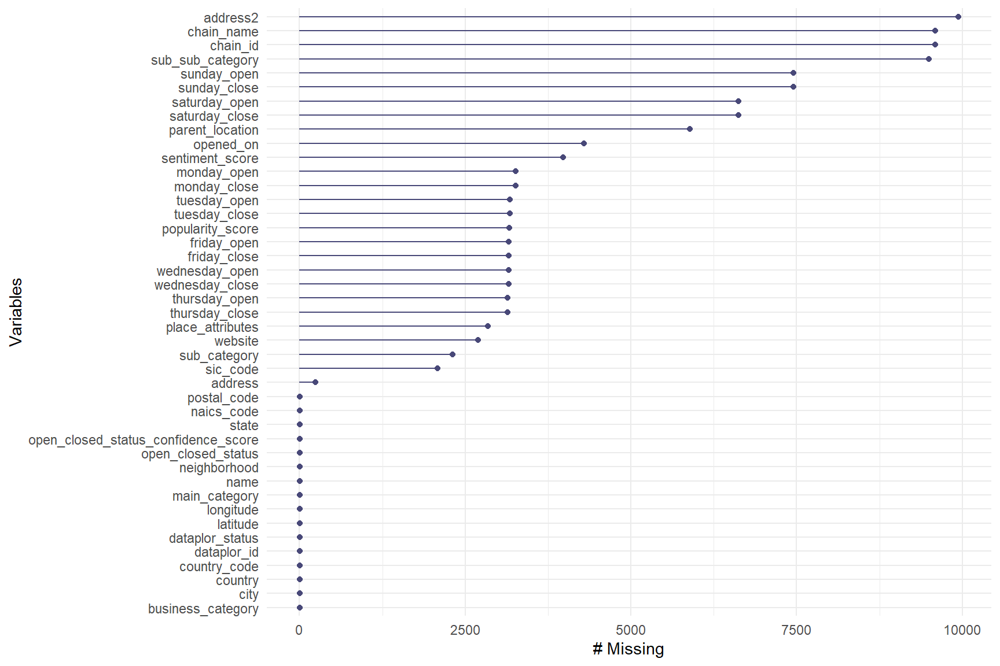
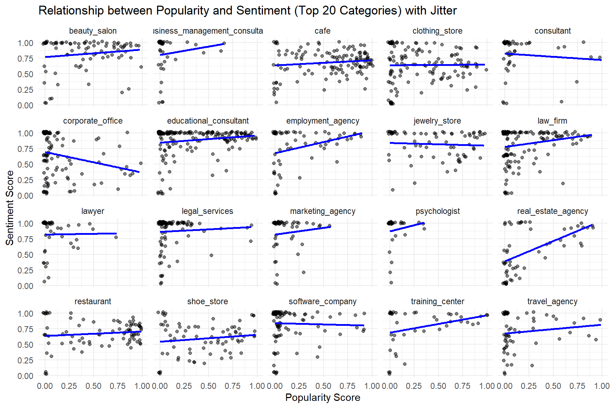
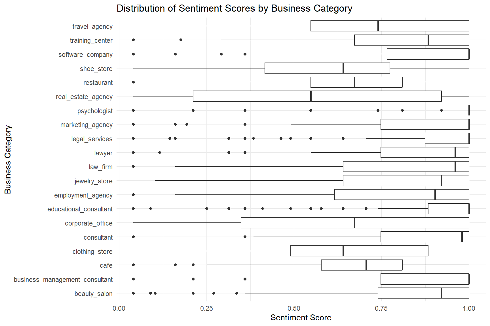

Technical Assessment: Data Analysis Exercise for Candidate Evaluation
Sebastián Sánchez Cuartas
_____________________________________________________________________________________________________________________________________
Assignment Overview
The goal of this assessment is to evaluate the candidate’s technical and analytical skills. The task involves analyzing a sample dataset from a client in the Consumer-Packaged Goods (CPG) sector to generate actionable insights. Here are the details provided for the assignment:
Task Details
- Objective: Identify patterns in the data that can inform the client’s marketing and supply chain strategies.
- Tools: You may use R, Python, or any object-oriented programming language.
- Time Limit: 3 hours. While time management is part of the evaluation, the quality of the analysis is prioritized.
Deliverables
- A Jupyter Notebook or R script with the complete analysis and code.
- A brief report (1-2 pages) summarizing findings and recommendations for the CPG client.
_____________________________________________________________________________________________________________________________________
Technical Assessment
Data Exploration & Quality Control
Load the dataset and explore its structure.
Identify any missing values, duplicates, or inconsistencies.
Provide a summary of the dataset, including variable types, record counts, and notable patterns.
Ensure data quality for client presentation.
Data Cleaning
Address missing or inconsistent values, and document the approach.
Standardize names, regions, and other key fields for accurate reporting.
Exploratory Data Analysis (EDA)
Conduct exploratory analysis to identify trends or patterns.
Focus on key fields and present insights in the final report.
SQL Query
Write a SQL query to extract counts by the main category.
_____________________________________________________________________________________________________________________________________
(1) Data Cleaning and Preparation
library(dplyr)
# Load the CSV file
data <- read.csv("C:/Users/Usuario/Downloads/Take_home_data.csv", stringsAsFactors = FALSE, sep = ";")
# Summary of the data frame structure
str(data)
# Clean special characters
data <- data %>%
mutate(across(-c(1, 2), ~ iconv(., to = "UTF-8", sub = "byte")))
# Convert to lowercase and replace whitespace with underscores, except for columns 1 and 2, which may contain uppercase codes
data <- data %>%
mutate(across(-c(1, 2), ~ gsub(" ", "_", tolower(.))))
# Replace commas with periods and convert to numeric
data$popularity_score <- as.numeric(gsub(",", ".", data$popularity_score))
data$sentiment_score <- as.numeric(gsub(",", ".", data$sentiment_score))
data$latitude <- as.numeric(gsub(",", ".", data$latitude))
data$longitude <- as.numeric(gsub(",", ".", data$longitude))
data$open_closed_status_confidence_score <- as.numeric(gsub(",", ".", data$open_closed_status_confidence_score))
# Replace empty strings with NA
data[data == ""] <- NA
# Convert the 'opened_on' column to date format
data$opened_on <- as.Date(data$opened_on, format = "%d/%m/%Y")
# Remove the "<a0>" character to make the hours in the corresponding columns more readable
data <- data %>%
mutate(across(29:42,
~ {gsub("<a0>", "", .)
}))
# Check unique values in key columns to detect errors
unique(data$main_category)
unique(data$sub_category)
unique(data$neighborhood)
unique(data$city)
unique(data$state)
unique(data$country_code)
unique(data$country)
unique(data$dataplor_status)
unique(data$open_closed_status)
# Identify duplicate rows
duplicates <- data[duplicated(data), ]
# Remove duplicates
data <- data[!duplicated(data), ]_____________________________________________________________________________________________________________________________________
(2) Missing Values Visualization

## dataplor_id parent_location
## 1 5888
## name main_category
## 1 1
## sub_category sub_sub_category
## 2307 9498
## business_category naics_code
## 1 2
## sic_code chain_id
## 2080 9592
## chain_name address
## 9592 240
## address2 neighborhood
## 9941 1
## city state
## 1 1
## postal_code country_code
## 4 1
## country latitude
## 1 1
## longitude dataplor_status
## 1 1
## open_closed_status open_closed_status_confidence_score
## 1 1
## opened_on popularity_score
## 4290 3163
## sentiment_score website
## 3980 2697
## monday_open monday_close
## 3260 3260
## tuesday_open tuesday_close
## 3170 3170
## wednesday_open wednesday_close
## 3154 3154
## thursday_open thursday_close
## 3138 3138
## friday_open friday_close
## 3161 3161
## saturday_open saturday_close
## 6625 6625
## sunday_open sunday_close
## 7453 7453
## place_attributes
## 2845_____________________________________________________________________________________________________________________________________
(3) Imputation of Missing Values and Comparative Analysis
library(tidyr)
library(dplyr)
library(ggplot2)
#Given the number of missing values in popularity_score and sentiment_score, which is approximately one-third of the data, we perform a comparative analysis between imputed vs. non-imputed elements to make a decision.
# Impute missing values for popularity and sentiment scores directly in the dataset
data <- data %>%
group_by(main_category) %>%
mutate(
popularity_score_imputed = ifelse(is.na(popularity_score), median(popularity_score, na.rm = TRUE), popularity_score),
sentiment_score_imputed = ifelse(is.na(sentiment_score), median(sentiment_score, na.rm = TRUE), sentiment_score)
) %>%
ungroup()
# Reshape data for visualization
data_comparison <- data %>%
pivot_longer(
cols = c(popularity_score, popularity_score_imputed, sentiment_score, sentiment_score_imputed),
names_to = c(".value", "Type"),
names_pattern = "(.+)_score(_imputed)?"
)
# Create boxplots for comparison
ggplot(data_comparison, aes(x = main_category, y = popularity, fill = Type)) +
geom_boxplot() +
theme_minimal() +
xlab("main_category") +
ylab("popularity") +
ggtitle("Distribution of popularity (Original vs Imputed)") +
theme(axis.text.x = element_text(angle = 45, hjust = 1))
ggplot(data_comparison, aes(x = main_category, y = sentiment, fill = Type)) +
geom_boxplot() +
theme_minimal() +
xlab("main_category") +
ylab("sentiment") +
ggtitle("Distribution of sentiment (Original vs Imputed)") +
theme(axis.text.x = element_text(angle = 45, hjust = 1))
# From the analysis above, it is concluded that the imputed data does not differ significantly from the non-imputed data. Therefore, we will proceed with the analyses using the imputed data, as it provides a larger sample size for subsequent analyses. However, it is important to note that this approach sacrifices some of the original data's variability._____________________________________________________________________________________________________________________________________
(4) Distribution of Main Business Categories
# View the distribution of main business categories
ggplot(data, aes(x = main_category)) +
geom_bar() +
theme_minimal() +
xlab("Main Category") +
ylab("Frequency") +
ggtitle("Distribution of Main Business Categories") +
theme(axis.text.x = element_text(angle = 45, hjust = 1))
# Justification: This plot shows the distribution of different types of businesses by main category, making it easier to identify which types of businesses are most common in the database.
# Importance for the Client: Understanding the most prevalent business categories can help the client identify segments with a high market presence and explore opportunities for expansion or improvement in less represented categories._____________________________________________________________________________________________________________________________________
(5) Summary of Popularity and Sentiment by Business Category
# Select the 20 most common categories for the business_category variable
top_categories <- names(sort(table(data$business_category), decreasing = TRUE)[1:20])
data_top <- data %>%
filter(business_category %in% top_categories)
# Summary of popularity and sentiment by business_category, including main_category
summary_popularity_sentiment <- data_top %>%
group_by(business_category) %>%
summarise(
avg_popularity = mean(popularity_score, na.rm = TRUE),
avg_sentiment = mean(sentiment_score, na.rm = TRUE),
count = n()
) %>%
left_join(data_top %>% select(business_category, main_category) %>% distinct(), by = "business_category") %>%
arrange(desc(avg_popularity))
# View the results
print(summary_popularity_sentiment)## # A tibble: 20 × 5
## business_category avg_popularity avg_sentiment count main_category
## <chr> <dbl> <dbl> <int> <chr>
## 1 cafe 0.572 0.685 137 dining
## 2 restaurant 0.553 0.677 116 dining
## 3 jewelry_store 0.469 0.819 85 retail
## 4 shoe_store 0.445 0.594 91 retail
## 5 beauty_salon 0.403 0.822 109 beauty
## 6 educational_consultant 0.323 0.885 239 professional…
## 7 clothing_store 0.308 0.643 177 retail
## 8 training_center 0.296 0.777 81 civil_society
## 9 real_estate_agency 0.241 0.547 94 professional…
## 10 employment_agency 0.215 0.769 130 civil_society
## 11 law_firm 0.185 0.820 214 professional…
## 12 travel_agency 0.164 0.701 97 travel
## 13 corporate_office 0.145 0.644 258 civil_society
## 14 consultant 0.115 0.812 136 professional…
## 15 legal_services 0.115 0.869 160 professional…
## 16 lawyer 0.0966 0.819 87 professional…
## 17 software_company 0.0960 0.837 304 professional…
## 18 marketing_agency 0.0913 0.840 112 professional…
## 19 business_management_consult… 0.0610 0.825 169 professional…
## 20 psychologist 0.0475 0.892 90 healthcare# Importance for the Client: This analysis allows the client to identify the most prominent categories in terms of popularity and positive perception, which is crucial for determining which areas to enhance or improve._____________________________________________________________________________________________________________________________________
(6) Relationship Between Popularity and Sentiment for Top Business Categories
# Faceted plot for the main business_categories using jitter to avoid overlap
ggplot(data_top, aes(x = popularity_score, y = sentiment_score)) +
geom_jitter(alpha = 0.5, width = 0.02, height = 0.02) + # Adjust 'width' and 'height' as needed
geom_smooth(method = "lm", se = FALSE, color = "blue") +
facet_wrap(~ business_category) +
theme_minimal() +
xlab("Popularity Score") +
ylab("Sentiment Score") +
ggtitle("Relationship between Popularity and Sentiment (Top 20 Categories) with Jitter")
# Justification: Filtering the 20 most common categories helps focus the analysis on those with greater relevance. This avoids visual overload and facilitates the interpretation of the graphs and results.
# Importance for the Client: This helps identify specific patterns between popularity and sentiment for each business category, showing whether there are categories with high popularity and low sentiment (or vice versa), which could be useful for adjusting marketing and customer service strategies._____________________________________________________________________________________________________________________________________
(7) Distribution of Popularity and Sentiment Scores by Business Category
# Complementary boxplot to visualize the distribution of popularity and sentiment scores by business category
ggplot(data_top, aes(x = business_category, y = popularity_score)) +
geom_boxplot() +
theme_minimal() +
coord_flip() + # Rotate the boxplot for better visualization
xlab("Business Category") +
ylab("Popularity Score") +
ggtitle("Distribution of Popularity Scores by Business Category")
ggplot(data_top, aes(x = business_category, y = sentiment_score)) +
geom_boxplot() +
theme_minimal() +
coord_flip() + # Rotate the boxplot for better visualization
xlab("Business Category") +
ylab("Sentiment Score") +
ggtitle("Distribution of Sentiment Scores by Business Category")
_____________________________________________________________________________________________________________________________________
(8) Analysis of Popularity and Sentiment Based on Business Open/Closed Status
# Popularity and sentiment based on open or closed status, adjusted to two levels "open" and "closed" to perform a t-test that allows understanding the significance of scores regarding the likelihood of the business being open or closed
data_filtered <- data %>%
filter(!is.na(open_closed_status)) %>%
mutate(open_closed_status = ifelse(open_closed_status %in% c("permanently_closed", "temporarily_closed"), "closed", open_closed_status))
# T-tests for popularity and sentiment by open/closed status
t_test_popularity <- t.test(popularity_score ~ open_closed_status, data = data_filtered)
print(t_test_popularity)##
## Welch Two Sample t-test
##
## data: popularity_score by open_closed_status
## t = -3.4404, df = 1109.7, p-value = 0.0006025
## alternative hypothesis: true difference in means between group closed and group open is not equal to 0
## 95 percent confidence interval:
## -0.06724881 -0.01840104
## sample estimates:
## mean in group closed mean in group open
## 0.2744281 0.3172530t_test_sentiment <- t.test(sentiment_score ~ open_closed_status, data = data_filtered)
print(t_test_sentiment)##
## Welch Two Sample t-test
##
## data: sentiment_score by open_closed_status
## t = -7.8706, df = 900.43, p-value = 1.01e-14
## alternative hypothesis: true difference in means between group closed and group open is not equal to 0
## 95 percent confidence interval:
## -0.11233375 -0.06749261
## sample estimates:
## mean in group closed mean in group open
## 0.6738197 0.7637329_____________________________________________________________________________________________________________________________________
(9) SQL Query
# Since the dataset is not very large, I can perform the query in R using the sqldf package.
library(sqldf)
# Ejecutar la consulta SQL usando sqldf
result <- sqldf("SELECT main_category, COUNT(*) AS category_count
FROM data
GROUP BY main_category")
# Ver el resultado
print(result)## main_category category_count
## 1 <NA> 1
## 2 automotive_services 64
## 3 bars 96
## 4 beauty 399
## 5 civil_society 1803
## 6 convenience_and_grocery_stores 76
## 7 dining 768
## 8 entertainment_and_recreation 319
## 9 healthcare 709
## 10 home_services 230
## 11 professional_services 3797
## 12 retail 1300
## 13 transportation_services 114
## 14 travel 266
## 15 uncategorized 3_____________________________________________________________________________________________________________________________________
(10) Data Analysis Report
This report is structured according to the points enumerated in the R code and corresponding graphics. The following presents the results and analysis:
1. Data Cleaning and Preparation
Data cleaning and preparation were performed to ensure quality and
consistency. This included removing duplicates, normalizing formats, and
converting columns to appropriate data types.
2. Missing Values Visualization
A visualization of missing values in the dataset was generated. This
helped identify patterns of missing data, allowing for a quick
assessment of the magnitude of missing values across different
variables, which aids in planning imputation strategies.
3. Imputation of Missing Values and Comparative
Analysis
Imputation methods were applied to handle missing values, such as median
imputation for the variables popularity_score and
sentiment_score, which are crucial for understanding the
success of each business. A comparative analysis was conducted before
and after the imputation to assess the impact of this technique on the
distribution of metrics. It was decided to proceed with the imputed
data, accepting a slight sacrifice in variability.
4. Distribution of Main Business
Categories
The distribution of main business categories was examined, providing
insights into the variety and concentration of businesses in each
category. This helps identify the most representative categories that
require more attention, with professional_services being the
most frequent. To gain deeper insights, the business_category
variable was further analyzed, establishing a relationship with the
imputed variables: popularity_score and
sentiment_score.
5. Summary of Popularity and Sentiment by Business
Category
A summary was created detailing popularity and sentiment by business
category. This analysis reveals how these metrics are related, providing
valuable insights into which categories have greater recognition and a
better overall perception, as well as identifying their respective
main_category.
6. Relationship Between Popularity and Sentiment for Top
Business Categories
The relationship between popularity and sentiment was explored for the
top business categories. The 20 most important categories were selected,
and the faceted plot revealed that most categories show low popularity
with high sentiment scores. This suggests the need for strategies to
boost popularity, leveraging the positive sentiment already present.
7. Distribution of Popularity and Sentiment Scores by
Business Category
The distribution of popularity_score and
sentiment_score by business category was visualized. This
approach provides a clearer perspective on how these metrics are
distributed, visually confirming the observations from the previous
analysis.
8. Analysis of Popularity and Sentiment Based on
Business Open/Closed Status
An analysis of popularity and sentiment based on the open or closed
status of businesses was conducted using t-tests. The results
showed:
o T-Test for Popularity: A significant p-value (< 0.05) indicates a difference between the popularity of open businesses (0.3173) and closed businesses (0.2744), suggesting that higher popularity scores correlate with a greater likelihood of remaining open.
o T-Test for Sentiment: A very low p-value indicates that open businesses have a higher average sentiment score (0.7637) compared to closed businesses (0.6738), implying that businesses with a positive perception are more likely to remain operational.
Based on this, it is recommended that the client focus on improving the perception of their businesses, as this could increase the likelihood of remaining open.
(11) Conclusion
In summary, the analysis reveals that both popularity and positive perception are critical factors for business sustainability. Implementing strategies that encourage higher popularity and a positive perception can significantly contribute to the operational continuity of businesses in the market. Additionally, considering the geographic coordinates available in the dataset, spatial analysis could provide further insights into regional trends and opportunities.